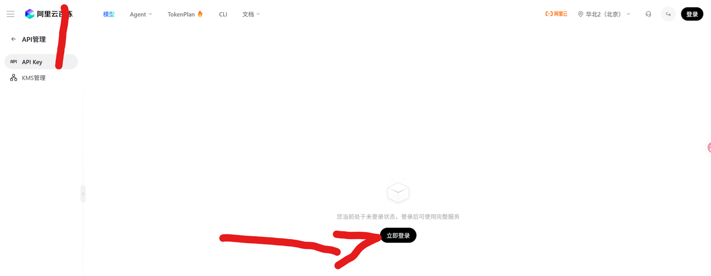
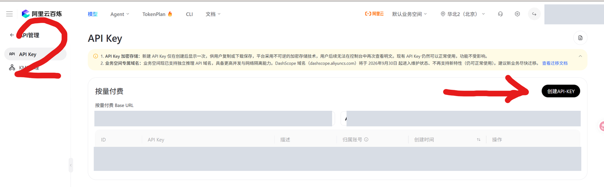
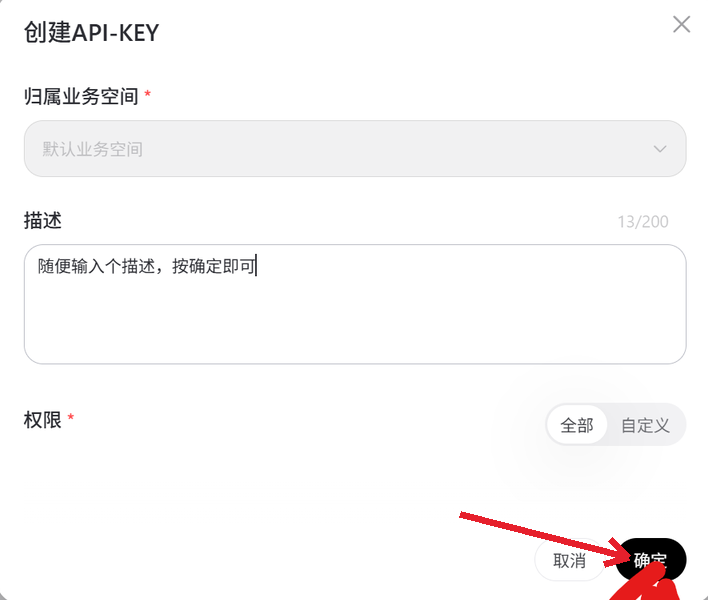
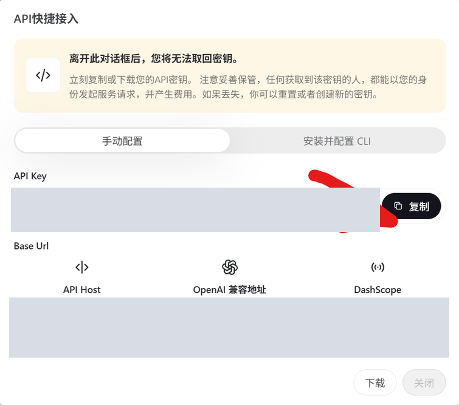
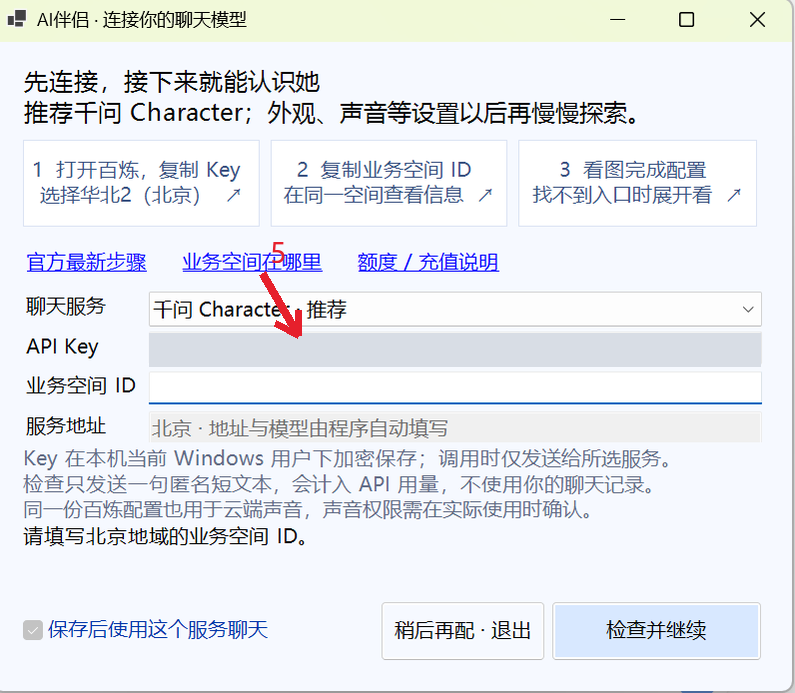
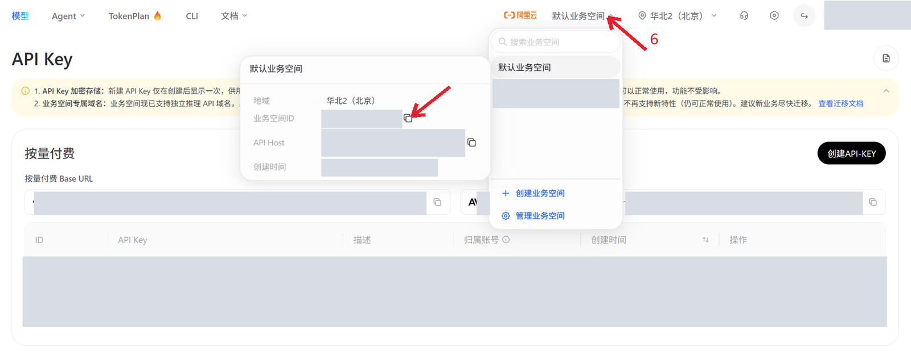
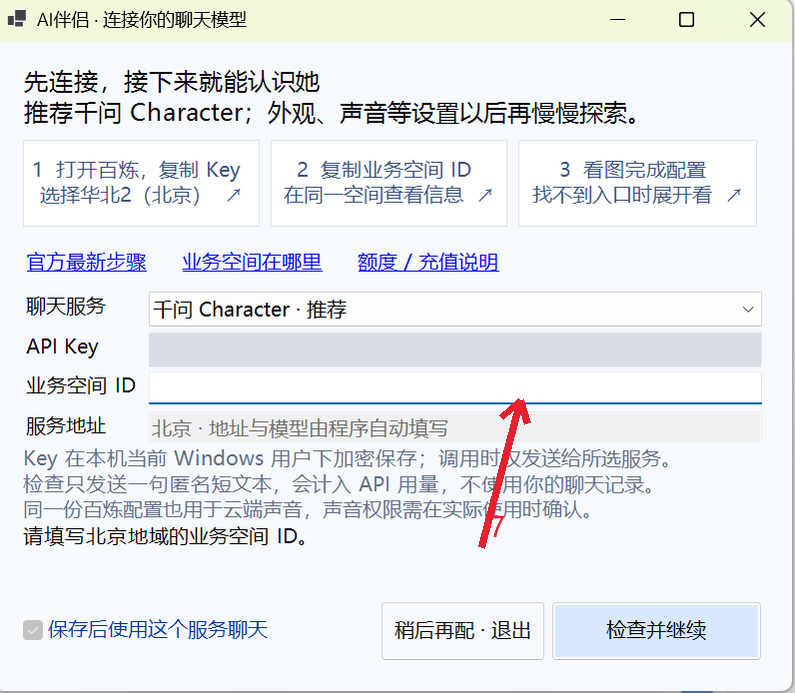
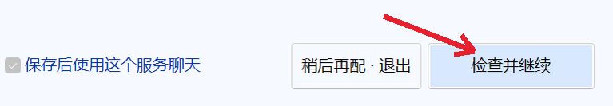

照着箭头，一步一步来。
推荐 千问 Character。你只需要复制两个值：API Key 和 业务空间 ID。
默认业务空间就可以，登录和配置都由你亲自完成。
按真实截图整理为 8 步，红箭头指向当前操作。截图中的个人信息已用不透明色块涂掉；点击图片可以放大。
登录百炼
在官网右上角确认 华北2（北京），再点击「立即登录」。使用你自己的阿里云账号。

点击「创建 API Key」
登录后，在 API Key 页面点击「创建 API Key」。默认业务空间可以直接用，不需要新建或改成其它空间。

填描述，然后点「确定」
描述可以填「AI伴侣」，方便你以后认出这个 Key。归属空间保持默认即可；其调用权限需要包含千问 Character。确认后创建。

复制 API Key
在创建成功的窗口中，点击 API Key 旁的「复制」。先不要把这个窗口关掉。

新 Key 可能只展示这一次。请妥善保管，不要把 Key 发到聊天、截图或公开页面。
回到 AI伴侣，粘贴 Key
切回 AI伴侣 · 连接你的聊天模型。点击「API Key」输入框，按 Ctrl + V。输入会显示为圆点，这是正常的。

先留着这个窗口，下一步去复制业务空间 ID。
回到百炼，复制业务空间 ID
回到百炼，点击顶部的 「默认业务空间」，在展开列表中查看当前空间信息。找到 「业务空间 ID」 这一行，点击右侧的小复制图标。

复制 ID，不要复制下面那行 API Host。保持刚才创建 Key 时所用的空间即可；不需要点击「创建业务空间」。
找不到空间信息？看官方图示 ↗回到 AI伴侣，粘贴空间 ID
点击 AI伴侣的 「业务空间 ID」 输入框，按 Ctrl + V。服务地址和模型名由程序填写，不需要你改。

只需要首次填写。默认空间也有自己的 ID；保存后下次会自动读取。程序不会凭 API Key 猜测空间 ID。
点击「检查并继续」
确认两个值填写好后，点击右下角的 「检查并继续」。成功后自动加密保存，进入下一步；首次安装可能还需要准备本地组件。

检查会发送一句匿名短文本，计入你的 API 用量；不使用人物资料或聊天记录。失败时按窗口提示检查，不会自动更换模型。
配置完成。下一次启动会记住你的选择；声音、字幕和外观以后再慢慢探索。
遇到问题时再看这里
业务空间 ID 能自动填写吗？
当前首次配置需要你提供空间 ID，不能只凭 Key 自动推断。默认业务空间无需更换，复制它的真实 ID 即可。保存一次后，之后启动会自动读取。
官方获取方式 ↗官网页面和图片不一样
这些是真实操作截图，但官网页面之后可能更新。在官网查找「API Key」「业务空间信息 / 详情」「Workspace ID」；优先使用官方最新指引。程序不代你登录、创建 Key 或充值。
官方 API Key 指引 ↗ · 官方空间 ID 图示 ↗检查失败 / 提示余额或权限问题
确认地域为北京，Key 有权使用该业务空间和千问 Character。按窗口提示检查网络、额度或模型权限。聊天检查通过不代表所有声音服务都已获授权。
官方账单、额度与充值说明 ↗进入下一步后，还要下载什么？
第一次安装需要准备本地组件。选择随安装包收到的 AICompanion-Components ZIP 即可校验安装，无需自行解压；准备一次后不必每次重复。已经准备好组件时，会直接继续启动人物。
本页随安装包离线提供，没有脚本、追踪或剪贴板读取，不含你的账号、Key、业务空间地址或人物资料。
截图整理日期：2026-10-07。官方页面可能更新，以官方说明为准。